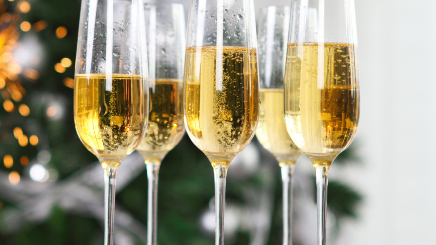

Шампанское . Тайны обольщения.

На вечеринках, праздниках, торжествах не обойтись без горячительных напитков. Но несомненным и заслуженным признанием пользуется шампанское. Да и как можно представить себе торжество без этого прекрасного напитка? Любой скажет:
«Ну какая же свадьба без шампанского!» Так и остальные торжества или юбилеи. А праздники? И Новый год будет не в радость, если не поднять бокал шампанского под бой курантов.
Шампанским предпочитают угощать на разных презентациях и светских раутах. А если мужчина первый раз приглашает даму в ресторан, можно не сомневаться, что он закажет шампанское.
Но здесь есть некоторые нюансы.
Стоит помнить, что одним женщинам нравится, к примеру, светлое игристое шампанское, а другие предпочитают только красное, третьим подавай розовое, и никакое другое их не привлекает.
Мужчина должен помнить, что выбирать шампанское следует в зависимости от того, за женщиной какого типа он ухаживает.
Если вы познакомились с очаровательной голубоглазой блондинкой, ее следует угощать светлым или розовым шампанским, желательно сладким. Поэтому лучше всего приобрести «Советское шампанское», которое обладает сладковатым терпким вкусом, или Asti Martini, с его фруктово-мускатным, мягким и сладким вкусом. Такие женщины предпочитают, как правило, игристое шампанское. «Советское шампанское» сильно пенящийся напиток с нестойким ароматом, а Asti Martini слегка пенится и имеет мягкий пряный аромат.
Встретив блондинку с карими глазами, считайте, что вам повезло. Такие женщины тщательно скрывают свои чувства. Они кажутся холодными и недоступными, но но самом деле они очень чувственны и темпераментны. Чтобы угодить такой даме, угостите ее красным шампанским, полусладким. Их не отнести и к любителям сладкого. Остановитесь на шампанском «Крым», имеющим гармоничный, устойчивый вкус, который так нравится подобным особам. Это шампанское не очень пенится и обладает горьковатым ароматом.
Если ваша избранница брюнетка с очаровательными карими глазами, значит вы встретили настоящий вулкан страстей.
Перед вами женщина-вамп. Что-то хищное и властное есть в ее облике. Но недаром говорят, что женщину понять невозможно.
Удивительно, но они предпочитают светлое шампанское. Чтобы сделать вашу встречу приятной, приготовьте игристое вино, полусладкое. Сладкое не доставит вашей избраннице никакого удовольствия. Лучше выберите Pompadur или Freixenet Mini Nevada. Pompadur обладает стойким и утонченным вкусом. Это слегка пенящийся напиток с чудесным фруктовым ароматом и чуть заметной кислинкой. Freixenet Mini Nevada имеет кисловатый вкус с горчинкой.
Если вы встречаетесь с брюнеткой с серыми глазами, знайте: такая женщина — всегда загадка. Она кажется простой и милой, но вы никогда не сможете разгадать ее до конца. Чтобы доставить ей удовольствие, приготовьте для нее светлое шампанское. Красное или розовое ее не впечатлит. Выберите белое персиковое, например Yves Roshe Prestige. У этого шампанского вкус неустойчивый, горьковато-миндальный.
Напиток сильно пенится и обладает приятным фруктовым ароматом.
Ухаживая за брюнеткой с голубыми глазами, не забывайте о ее непредсказуемости. Никогда нельзя понять, что она предпримет в следующий момент. Но в чем можно быть абсолютно уверенным, так это в том, что из всех напитков ей больше всего нравится белое сухое шампанское типа Claudius Caesar. Оно обладает чуть горьковатым вкусом и имеет стойкий, глубокий аромат.
Шатенки с синими глазами отличаются веселым и добрым нравом, всегда обаятельны и остроумны. Чтобы завоевать расположение такой женщины, угостите ее шампанским. Такие женщины предпочитают, как правило, белые полусладкие вина, типа Olimpic Dama. Оно отличается чистым гармоничным вкусом и обладает, слегка сладковатым фруктовым ароматом.
Чтобы завоевать расположение шатенки с серыми или серовато-зелеными глазами, предстоит немало потрудиться. Она покажется вам строгой и неприступной. Угостите ее шампанским Cafe de Paris. Такие женщины обладают изысканным вкусом и по достоинству оценят ваш выбор. Белое сухое шампанское Cafe de Paris отличается гармоничным и тонким вкусом, слегка пенящееся, с горчащим ароматом. Он напоминает аромат любви.
Встретив женщину с рыжими волосами и зелеными глазами, можете не сомневаться, что перед вами настоящая колдунья. Вы уже попали в ее сети и мечтаете, чтобы это очарование не кончалось. Но и колдунья может быть очарована. Приготовьте для нее белое полусухое шампанское «Новый Свет», обладающее удивительно чистым и гармоничным вкусом. Напиток слегка пенящийся с терпким ароматом, который отдает сладким.
Для избранницы с рыжими волосами и голубыми или серыми глазами, являющей собой удивительное гармоничное существо, отличающееся мягкостью и нежностью, наиболее подходящим будет розовое или белое сладкое шампанское, например «Советское». Оно отличается сладким и терпким вкусом и чуть уловимым, нестойким ароматом.
Женщина с рыжими волосами и карими глазами — это само очарование. Ваша задача — покорить ее. Такие дамы предпочитают красные вина, поэтому выберите для нее красное полусладкое шампанское «Крым», но можете угостить и брютом.
Если же вы покорены женщиной, у которой русые волосы и серые глаза, вам может показаться, что добиться ее расположения легко. Это совсем не так. Такие леди отличаются внутренней сдержанностью. Покорить ее весьма непросто, ухаживать за ней придется долго. Для своей Снежной Королевы приготовьте белое полусухое шампанское Freixenet Vini Nevada, обладающее своеобразным кисловатым вкусом с чуть заметной горчинкой, или белое персиковое шампанское Yvis Roshe Prestige с горьковато-миндальным вкусом и легким фруктовым ароматом.
А вот для русоволосой красавицы с голубыми глазами лучше выбрать белое полусухое Pompadur, которое имеет утонченный и стойкий вкус и отличается насыщенным фруктовым ароматом.
Основная черта избранницы с русыми волосами и карими глазами — смешливость. Немало насмешек от нее придется вам выдержать. Но вы угодите ей, если угостите ее белым полусухим шампанским «Надежда». Оно отличается устойчивым, слегка горьковатым вкусом и приятным ароматом.
Шампанское — прекрасный напиток для обольщения, а кроме этого — незаменимое составляющее для многих коктейлей.
Такой коктель поможет покорить вам даму вашей мечты.
Для блондинок приготовьте такой коктейль.
КОКТЕЙЛЬ «УДАЧА»
Требуется: 50 г коньяка, 80 г шампанского, 1 ст. л. сахара, 30 г фруктового ликера, 1 стакан свежей клубники, кубики льда.
Способ приготовления. Свежую клубнику тщательно протрите через сито, добавьте сахар и перемешайте. В сладкую клубничную смесь влейте коньяк и ликер, взбивайте в миксере в течение 2–3 минут. Разлейте смесь в бокалы, положите лед и добавьте шампанское.
Можно приготовить и другие коктейли.
КОКТЕЙЛЬ «СОВЕРШЕНСТВО»
Требуется: 50 г малинового сиропа, 70 г шампанского, 30 г абрикосового ликера, 30 г минеральной воды, 1 ч. л. сахара, горсть малины, кубики льда.
Способ приготовления. Растворите сахар в минеральной воде, добавьте малиновый сироп, затем абрикосовый ликер и малину.
Смешивайте в шейкере в течение 1–2 минут. На дно бокала положите кубики льда. Перед подачей к столу залейте шампанским. Ваш коктейль готов.
КОКТЕЙЛЬ «БЛАЖЕНСТВО»
Требуется: 30 г клубничного ликера, 50 г абрикосового сока, 1/2 ст. л. сахара, 50 г минеральной воды, фруктовое мороженое, 50 г фруктового йогурта, 70 г шампанского, кубики льда.
Способ приготовления. Смешайте воду с абрикосовым соком.
Насыпьте сахар и хорошо перемешайте. Добавьте клубничный ликер. В миксере смешайте йогурт и мороженое и влейте в приготовленную смесь. Разлейте в бокалы, положите кубики льда и залейте шампанским.
КОКТЕЙЛЬ «ВОСТОРГ»
Требуется: 50 г виноградного сока, 30 г коньяка, 70 г белого полусладкого шампанского, дольки мандарина, ягоды винограда, 1 ст. л. сахара, лед.
Способ приготовления. В виноградный сок влейте коньяк, добавьте сахар и хорошо перемешайте. Затем положите дольки мандарина и виноград. Приготовленную смесь залейте шампанским, положите лед и подавайте к столу.
КОКТЕЙЛЬ «ПИРАМИДА»
Требуется: 30 г коньяка, 50 г лимонного сока, 50 г яблочного сока, 30 г апельсинового сиропа, 1 ст. л. сахара, 50 г минеральной воды, 70 г белого полусладкого шампанского, кусочки сладких яблок, дольки лимона и апельсина, кружок апельсина, кубики льда.
Способ приготовления. Влейте в коньяк лимонный и яблочный сок. Хорошо перемешайте. Добавьте в апельсиновый сироп минеральную воду и сахар, перемешайте. Соедините приготовленные смеси и перемешайте их. Положите на дно бокала фрукты, залейте их полученной смесью. Добавьте кубики льда и влейте шампанское. Готовый коктейль подавайте на стол, украсив кружком апельсина.
Следующие рецепты коктейлей — для блондинок с карими глазами. Они будут в восторге.
КОКТЕЙЛЬ «ОБЫКНОВЕННОЕ ЧУДО»
Требуется: 30 г коньяка, 70 г красного шампанского «Крым», 50 г минеральной воды, горсть черной смородины, 1 ст. л. сахара.
Способ приготовления. В коньяк влейте шампанское и минеральную воду. Добавьте сахар и хорошо размешайте.
Опустите ягоды черной смородины. Перед подачей к столк положите кубик льда.
КОКТЕЙЛЬ «ФАНТАСТИЧЕСКИЙ СОН»
Требуется: 50 г апельсинового сока, 50 г сливового сиропа, 70 г молока, 1 яйцо, 1 ч. л. меда, 1 ст. л. сахара, 50 г минеральной воды, 70 г красного шампанского, кубики льда.
Способ приготовления. Отделите белок от желтка. Желток, мед и молоко хорошо взбейте в миксере. Смешайте апельсиновый сок и сливовый сироп, добавьте минеральную воду и сахар. Хорошо перемешайте. В подготовленную массу влейте медово-молочную смесь. Перемешайте. Добавьте шампанское — и ваш коктейль готов. Положите в него кубики льда.
КОКТЕЙЛЬ «ВИШНЕВЫЙ»
Требуется: 30 г коньяка, 50 г вишневого сиропа, 30 г лимонного сока, 70 г красного шампанского, 1 ст. л. фруктового мороженого, спелые ягоды вишни без косточек.
Способ приготовления. Смешайте коньяк и лимонный сок. Влейте в эту смесь вишневый сироп, затем положите мороженое и взбейте миксером. Положите на дно бокала ягоды вишни и залейте их приготовленной смесью. Влейте шампанское и коктейль готов. Такой коктейль не оставит вашу избранницу равнодушной.
Как правило, брюнеток считают роковыми женщинами. Кажется, что в ее груди таится океан страстей. Она может не подавать виду, но это только до поры до времени. Но что же предпочитают брюнетки, роковые красавицы? Конечно же, экзотические фрукты: ананасы, киви, фейхоа. Они весьма неравнодушны и к винограду. А если выбирать для них шампанское, то обязательно сладкое.
Коктейли, которыми можно угостить брюнетку.
КОКТЕЙЛЬ «ОЧАРОВАННЫЙ СТРАННИК»
Требуется: 70 г виноградного сока, 30 г коньяка, дольки мандарина, ягоды винограда, 1 ст. л. сахара, 70 г шампанского, лед.
Способ приготовления. В виноградный сок влейте коньяк, добавьте сахар и хорошо перемешайте. Затем положите дольки мандарина и виноград. Приготовленную смесь залейте шампанским, положите лед и подавайте к столу.
КОКТЕЙЛЬ «НЕЖНОСТЬ»
Требуется: 50 г шоколадного ликера, 50 г персикового ликера, 50 г фруктового сиропа, 70 г шампанского, 50 г йогурта, 1 ст. л. сахара, 50 г минеральной воды, немного свежих ягод винограда, ломтики киви, кубики льда.
Способ приготовления. Смешайте воду с сахаром и фруктовым сиропом. В смесь добавьте шоколадный ликер и перемешайте, затем — персиковый ликер и снова перемешайте. Положите ягоды винограда и ломтики киви. Добавьте йогурт, тщательно перемешайте и положите кубики льда. Готовый коктейль перед подачей к столу залейте шампанским. Бокал можно украсить ломтиком апельсина или лимона.
КОКТЕЙЛЬ «ФЕЯ»
Требуется: 50 г персикового ликера, 50 г лимонного сока, 1 ст. л. сахара, 50 г минеральной воды, ягоды вишни или синего винограда, 50 г шампанского.
Способ приготовления. Смешайте воду и лимонный сок.
В приготовленную смесь влейте ликер. Разлейте по бокалам и охладите, поставив на некоторое время в холодильник. В холодную смесь положите вишни или виноград и залейте все шампанским. Ваш коктейль готов.
КОКТЕЙЛЬ «ЮЛИЯ»
Требуется: 50 г коньяка, 50 г яблочного сока, 30 г лимонного сока, 70 г шампанского, 1 ст. л. абрикосового джема, дольки консервированного ананаса, 1 ч. л. тертого миндаля, кубики льда.
Способ приготовления. Смешайте яблочный и лимонный сок.
Добавьте джем и взбейте в миксере. В приготовленную смесь влейте коньяк и хорошо перемешайте. На дно бокала положите дольки ананаса и посыпьте тертым миндалем. Залейте приготовленной смесью и охладите немного. Добавьте шампанского — и ваш коктейль готов. Бокал с коктейлем перед подачей к столу украсьте спиралью из кожуры апельсина.
КОКТЕЙЛЬ «ДЛЯ МИЛОЙ ДАМЫ»
Требуется: 30 г мандаринового ликера, 50 г яблочного сока, 30 г лимонного сока, 70 г шампанского, 1 ст. л. абрикосового джема, дольки консервированного ананаса и мандарина, кубики льда.
Способ приготовления. Смешайте яблочный и лимонный сок.
Добавьте джем и взбейте в миксере. В приготовленную смесь влейте ликер и хорошо перемешайте. На дно бокала положите дольки ананаса и мандарина. Залейте все приготовленной смесью, добавьте шампанское. Перед подачей к столу украсьте бокал. Для этого снимите с мандарина кожуру в виде звездочки или цветка. Наденьте ее на заостренную палочку и поместите в стакан с коктейлем.
КОКТЕЙЛЬ «ОКЕАН ЛЮБВИ»
Требуется: 40 г коньяка, 60 г гранатового сока, 70 г шампанского Pompadur, 1/2 ч. л. тертого миндаля, 1 ст. л. сахара, 50 г минеральной воды, несколько ягод клубники.
Способ приготовления. Смешайте гранатовый сок и минеральную воду. Подогрейте коньяк и влейте в приготовленную смесь.
Добавьте сахар и хорошо перемешайте, затем тертый миндаль и положите ягоды клубники. Залейте все шампанским — и ваш коктейль готов.
КОКТЕЙЛЬ «ВЕЧЕРНИЙ»
Требуется: 50 г черносмородинового сиропа, 30 г коньяка, 30 г лимонного сока, 70 г шампанского Freixenet Mini Nevada, 1 ст. л. сахара, 50 г минеральной воды, дольки мандарина, кубики льда.
Способ приготовления. Разбавьте сироп минеральной водой.
Добавьте лимонный сок. Насыпьте сахар и хорошо перемешайте.
Влейте коньяк и снова перемешайте. В приготовленную смесь положите дольки мандарина. Залейте шампанским. Перед подачей к столу положите в коктейль кубики льда.
КОКТЕЙЛЬ «БЕСПОДОБНЫЙ»
Требуется: 70 г клубничного ликера, 50 г абрикосового сока, 1/2 ст. л. сахара, 50 г минеральной воды, 70 г шампанского Freixenet Mini Nevada, дольки апельсина, кубики льда.
Способ приготовления. Смешайте воду с абрикосовым соком, насыпьте сахар и хорошо перемешайте. Добавьте ликер.
Положите на дно бокала дольки апельсина, залейте приготовленной смесью. Влейте охлажденное шампанское. Бокал с коктейлем украсьте кружочком лимона.
А вот для шатенок лучше всего готовить коктейли с разными фруктами. Такие женщины больше всего любят бананы, персики, абрикосы, виноград.
КОКТЕЙЛЬ «СЕРПАНТИН»
Требуется: 30 г коньяка, 50 г гранатового сока, 50 г персикового сиропа, 70 г шампанского, 1/2 ч. л. тертого миндаля, 1 ст. л. сахара, 50 г минеральной воды, несколько ягод вишни, клубники, земляники.
Способ приготовления. Смешайте гранатовый сок и минеральную воду. Подогрейте коньяк и влейте в приготовленную смесь, добавьте ликер, положите сахар и хорошо перемешайте.
Положите тертый миндаль и ягоды вишни, клубники, земляники.
Залейте шампанским. Украсьте бокал с коктейлем спиралью из кожуры лимона.
КОКТЕЙЛЬ «МЕЧТА»
Требуется: 30 г коньяка, 50 г апельсинового сока, 30 г сока авокадо и 30 г сока киви, кусочки ананасов, бананов, яблок, 70 г шампанского.
Способ приготовления. В коньяк добавьте апельсиновый сок, соки авокадо и киви. Бросьте кубики льда и положите фрукты.
Залейте все шампанским. Подавать лучше охлажденным, украсив бокал ломтиком апельсина.
КОКТЕЙЛЬ «ЗВЕЗДНЫЙ»
Требуется: 40 г коньяка, 60 г гранатового сока, 1/2 ч. л. тертого миндаля, 1 ст. л. сахара, 50 г минеральной воды, 70 г шампанского, кусочки бананов.
Способ приготовления. Смешайте гранатовый сок и минеральную воду. Подогрейте коньяк и влейте в приготовленную смесь.
Добавьте сахар и хорошо перемешайте. Положите тертый миндаль и кусочки бананов. Залейте все шампанским. Перед подачей украсьте коктейль кружочком апельсина.
КОКТЕЙЛЬ «ВЕЧЕРНЯЯ ЗВЕЗДА»
Требуется: 50 г яблочного сока, 50 г персикового сиропа, 30 г мятного ликера, 70 г шампанского, 50 г минеральной воды, кусочки персиков или абрикосов, кубики льда.
Способ приготовления. Разбавьте персиковый сироп водой.
Добавьте яблочный сок и перемешайте. На дно бокалов положите кусочки фруктов. Залейте их приготовленной смесью. Затем влейте ликер и бросьте кубики льда. После этого залейте шампанское — и ваш коктейль готов. Перед подачей, его можно украсить кружочком апельсина или лимона, а также бросить в бокал кусочек белого шоколада.
КОКТЕЙЛЬ «ПРИНЦЕССА»
Требуется: 50 г мандаринового ликера, 50 г лимонного сока, 70 г шампанского, 50 г минеральной воды, ягоды синего винограда, дольки мандарина, 1 яйцо, 50 г сливочного мороженого, 1 ст. л. сахара, 70 г сливок, кубики льда.
Способ приготовления. Разомните виноград с сахаром, чтобы получилась однородная масса. Отделите белок от желтка.
Желток разотрите. Смешайте воду с лимонным соком. В смесь добавьте растертое яйцо, затем виноградную массу и перемешайте. Положите мороженое и сливки, взбейте в миксере.
В полученную смесь влейте ликер. Положите на дно бокала дольки мандарина. Залейте приготовленной смесью. Бросьте кубики льда и залейте все шампанским. Готовый коктейль украсьте кружком апельсина.
Известно, что женщины с рыжими волосами — колдуньи. Но и колдунью вы покорите волшебным коктейлем, если приготовите его по такому рецепту.
КОКТЕЙЛЬ «ВОЛШЕБСТВО»
Требуется: 50 г клубничного сиропа, 30 г коньяка, 1 ст. л. сахара, кусочки персиков или абрикосов, 70 г шампанского.
Способ приготовления. В клубничный сироп влейте коньяк, положите сахар и хорошо перемешайте. Затем положите кусочки фруктов. Готовой смесью залейте фрукты и охладите. Добавьте шампанское и подавайте к столу, украсив бокал зонтиком из фольги. Для этого возьмите пластинку фольги, сверните ее вчетверо и вырежите кружок или какую-нибудь другую фигурку.
Наденьте на заостренную палочку и опустите в стакан с коктейлем.
Свою зеленоглазую волшебницу вы можете угостить другим коктейлем.
КОКТЕЙЛЬ «МАГИЯ ЛЮБВИ»
Требуется: 50 шоколадного ликера, дольки апельсинов, 30 г клубничного ликера, 50 г сливок, 50 г молока, 1 ч. л. тертого миндаля, 70 г шампанского.
Способ приготовления. В сок добавьте клубничный ликер, а затем шоколадный. Положите на дно бокала апельсиновые дольки. Залейте полученной смесью. Взбейте тщательно сливки и молоко, добавьте в бокал. Положите тертый миндаль и залейте все шампанским. Подавайте охлажденным, украсив бокал спиралью из кожуры апельсина.
Если хотите, чтобы ваша колдунья не осталась к вам равнодушной, то приготовьте для нее такой коктейль.
КОКТЕЙЛЬ «ЗАГАДКА»
Требуется: 50 г мятного ликера, 50 г яблочного сока, 1 яйцо, 1 ст. л. сахара, 50 г шоколадного мороженого, 50 г сливок, дольки консервированных ананасов, 1 ч. л. тертого миндаля, 70 г шампанского.
Способ приготовления. Отделите белок от желтка. Разотрите желток с сахаром, добавьте яблочный сок, перемешайте.
Мороженое взбейте со сливками. Добавьте ликер и сок.
Положите на дно бокала дольки ананаса. Залейте приготовленной смесью. Охладите в течение нескольких минут.
Залейте шампанским — ваш коктейль готов.
Коктейль «Очарование» не оставит вашу колдунью равнодушной.
КОКТЕЙЛЬ «ОЧАРОВАНИЕ»
Требуется: 50 г бананового ликера, 50 г абрикосового сиропа, 50 г лимонного сока, свежие ягоды клубники или земляники, 70 г шампанского.
Способ приготовления. Смешайте лимонный сок с абрикосовым сиропом, добавьте ликер. Положите ягоды и залейте все шампанским. Подавайте охлажденным.
Вы все больше и больше поддаетесь чарам вашей спутницы. Она вас действительно околдовала. Но вы тоже можете быть волшебником и покорить ее коктейлем «Колдовские чары».
КОКТЕЙЛЬ «КОЛДОВСКИЕ ЧАРЫ»
Требуется: 50 г шоколадного ликера, 50 г кофейного настоя, 50 г лимонного сока, 70 г шампанского, ломтики лимона, кубики льда.
Способ приготовления. Разбавьте шоколадный ликер кофейным настоем, хорошо перемешайте. Влейте лимонный сок. Положите на дно бокала ломтики лимона и залейте приготовленной смесью. Поставьте на несколько минут в холодное место.
Опустите в бокал кубики льда и залейте шампанским. Украсьте бокал с коктейлем ломтиком лимона.
Для русоволосой красавицы лучше всего приготовить такой коктейль.
КОКТЕЙЛЬ «ЗОЛОТАЯ ОСЕНЬ»
Требуется: 30 г апельсинового ликера, 30 г лимонного сока, 70 г шампанского, 50 г лимонада, 1 апельсин, 1 кружок апельсина, кубики льда.
Способ приготовления. В лимонный сок налейте ликер и перемешайте. Затем добавьте лимонад и опять перемешайте.
Выжмите в смесь сок 1 апельсина и взболтайте в третий раз.
Напиток хорошо охладите и влейте шампанское. Подавая его к столу, положите в стаканы с напитком кубики льда. Украсьте стакан с коктейлем кружочком апельсина.
КОКТЕЙЛЬ «НЕ РАССТАВАТЬСЯ»
Требуется: 50 г бананового ликера, 50 г лимонного сока, 70 г шампанского, 50 г минеральной воды, 1/2 стакана свежих ягод клубники, 2 яйца, 50 г сливочного мороженого, 1 ст. л. сахара, 70 г сливок, кубики льда.
Способ приготовления. Отделите белок от желтка. Желток разотрите с сахаром. Смешайте воду с лимонным соком. В смесь добавьте растертое яйцо, затем ягоды клубники, мороженое и сливки, взбейте в миксере. В полученную смесь влейте ликер и перемешайте. Положите кубики льда и залейте шампанским.
Готовый коктейль украсьте кружками лимона.
КОКТЕЙЛЬ «НЕЗАБУДКА»
Требуется: 50 г абрикосового ликера, 50 г лимонного сока, 50 г минеральной воды, 70 г шампанского, 1/2 стакана ягод клубники или земляники, 50 г сливочного мороженого, 1 ст. л. сахара, 50 г сливок, 1/2 ч. л. тертого миндаля, кубики льда.
Способ приготовления. Смешайте воду с сахаром и лимонным соком. В смесь добавьте ликер и перемешайте. Положите ягоды клубники или земляники, мороженое и сливки, взбейте все в миксере. Полученную смесь посыпьте тертым миндалем и перемешайте. Залейте шампанским. В готовый коктейль перед подачей к столу положите кубики льда.
КОКТЕЙЛЬ «ЗИМНЯЯ СКАЗКА»
Требуется: 50 г молока, 50 г яблочного сока, 30 г грейпфрутового ликера, 70 г шампанского, 1 ст. л. сахара, 50 г минеральной воды, 50 г сливочного мороженого, тертый белый шоколад, кубики льда.
Способ приготовления. Смешайте воду с сахаром и яблочным соком. В смесь добавьте ликер и перемешайте, затем мороженое и молоко, взбейте в миксере. В готовую смесь положите шоколад и перемешивайте в шейкере в течение 1,5 минут.
Бросьте туда кубики льда. Залейте шампанским и подавайте к столу, немного охладив.
С помощью этих напитков вы без труда завоюете сердце симпатичной вам дамы. Желаю удачи!